在githubPage上运行博客，实现无服务器博客
0.前置准备
- 安装node20.19.0
在windows或者linux安装nvm，教程如下
https://mp.weixin.qq.com/s/Gns2sFPtXAMy6dDqexsG1A
一定要使用20.19.0版本，否则可能跟我下面的是源代码仓库版本不符
1.配置基本信息
实现效果，需要配置两个仓库，第一个就是主要用来交互的源代码仓库,fork我的源代码仓库
https://github.com/yating1022/hexo-blog-source
创建一个空仓库，不需要创建readme.md仓库名称以你的github用户名为名字+github.io，比如我的是yating1022，那我仓库名称就是 yating1022.github.io
如下
复制github.io仓库的地址备用
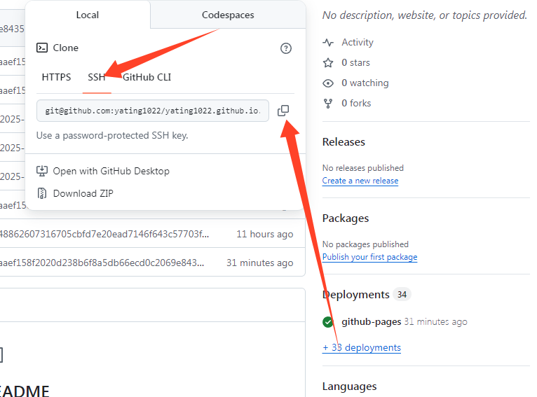
修改hexo-blog-source仓库配置文件 _config.yaml
修改如下信息
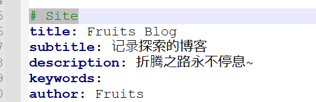
此处为主页显示的信息，改为自己的
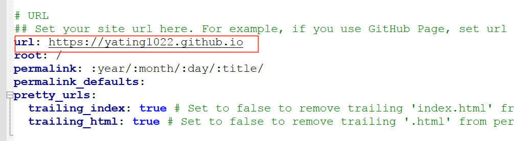
此处仅修改url，其余不要动
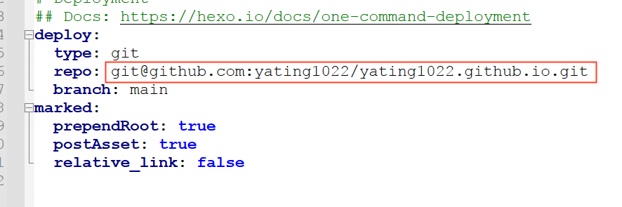
修改为刚才复制的仓库地址
随后将代码push
2.配置工作流
工作流不用修改，但是环境变量得修改，先去获取一个token，用来给源仓库的工作流推送代码
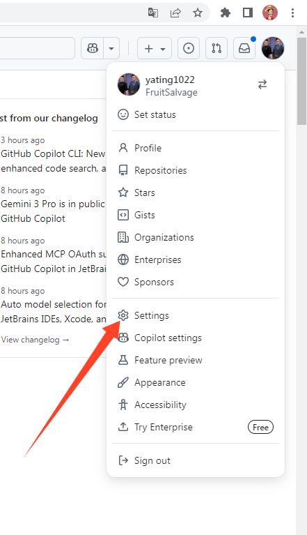
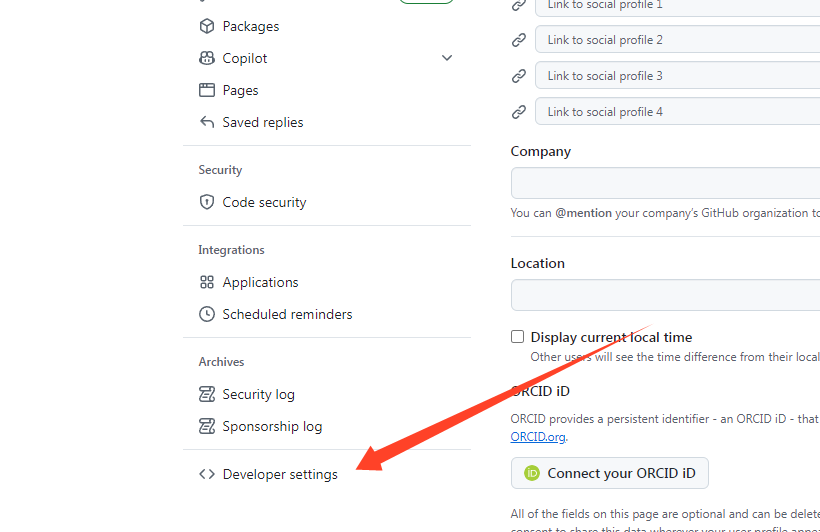
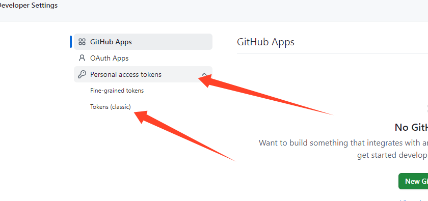
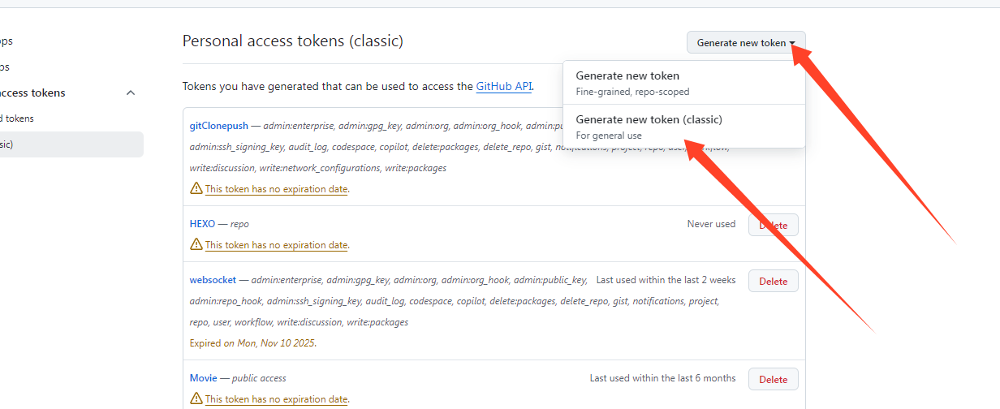
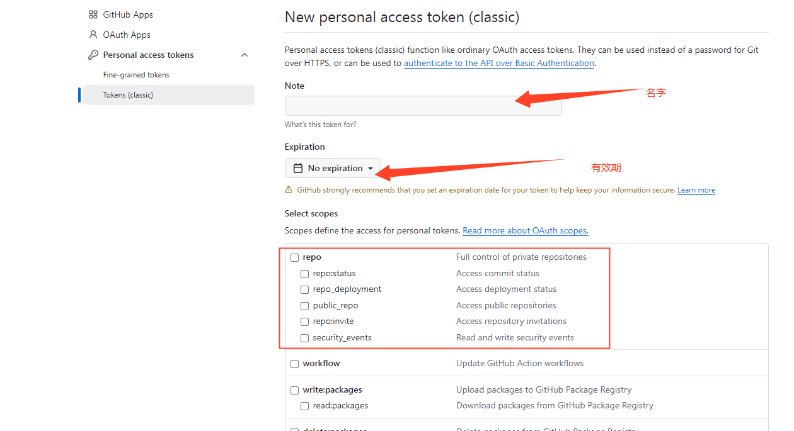
把repo权限全选，保存后会有一个token，复制备用
来到hexo-blog-source源代码仓库
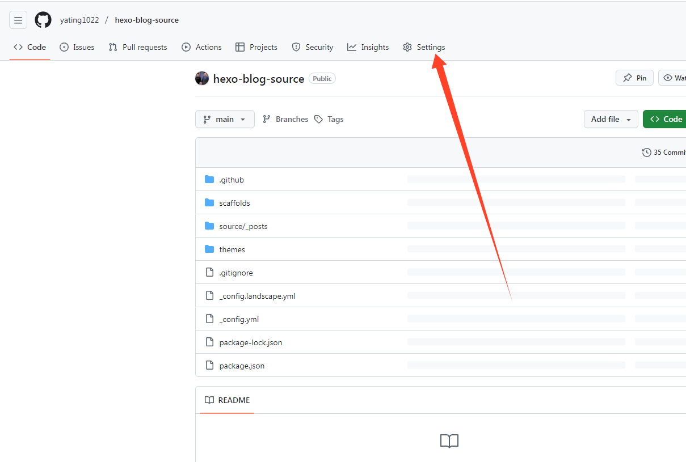
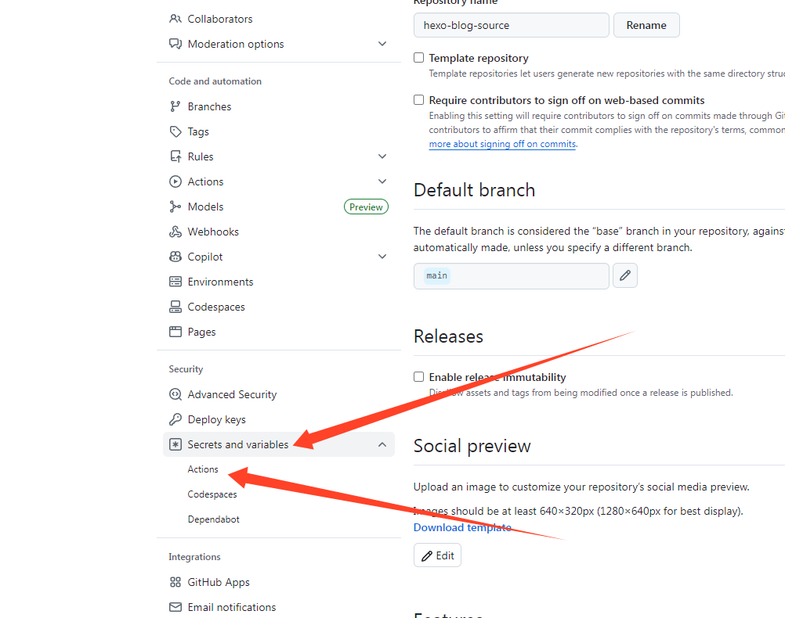
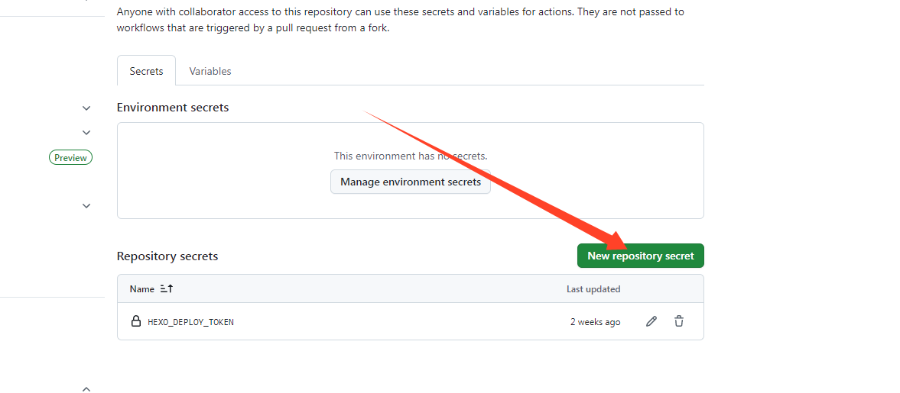
名字写HEXO_DEPLOY_TOKEN，值写上面得到的token值
至此就已经配置完成
3.编写博文
我习惯使用typora，这是破解版的仓库地址
https://github.com/main-studio/TyporaCrack
下载安装后进入配置
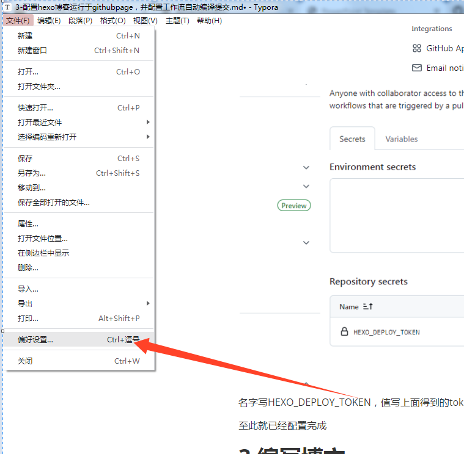
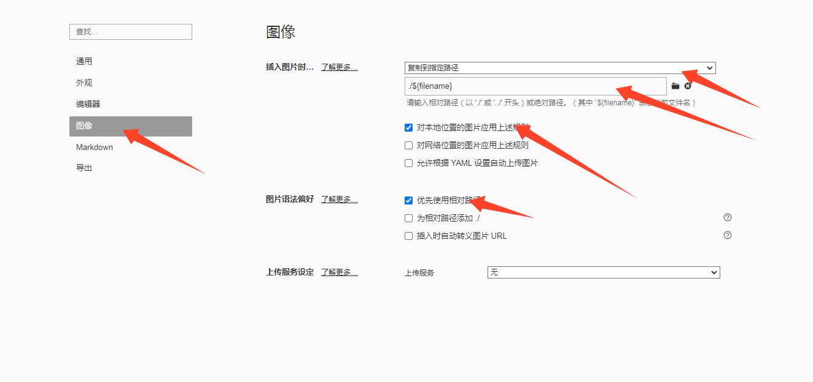
如图配置
编写博文时，只需要在源代码仓库打开终端，输入
hexo n "博文标题名称"
就会自动在source_posts目录自动创建博文的md文件，使用typora打开，在里面写，图片直接复制进去
编写完毕后，把源代码仓库推送到github，就会自动更新页面到github上，最后访问的地址是